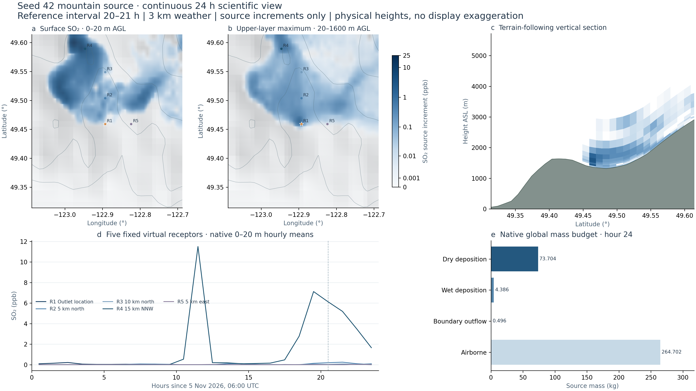

Surface concentrations vary in space and time.
The largest native hourly surface cell mean is 81.664ppb. This maximum is searched over the full regional grid and all24 hourly frames, separately from the five fixed receptors.
SEED42 / ONE HYPOTHETICAL MOUNTAIN SOURCE
Native surface and elevated fields, a terrain-following vertical section, and synchronized receptor curves.
5 November 2026,06:00 UTC →6 November 2026,06:00 UTC
01 / SYNCHRONIZED FIELDS
Native0–20m above ground
Maximum native layer mean within20–1600m AGL
★ Hypothetical source; R1–R5 are fixed virtual receptors. Relief uses the actual native model-ground height, with no6× terrain display exaggeration. The right map is a maximum of layer means, not column-integrated mass. Colour scales remain fixed through all24 hours. A bounded, continuous-rate scalar reconstruction connects hourly means. Native samples remain available in the probe; rendered images are never blended.
Loading native scientific fields…
Actual terrain-following layer means ·height ASL
The section is a native grid column near the outlet, not a separate plume model.
Native0–20m layer means ·click the curve to move in time
Locations are prescribed by distance and bearing from the source, without selecting concentration peaks. They are not observation stations. Hourly values are plotted at interval centres; elapsed-period means are plotted at the corresponding interval end.
02 / NATIVE RESULTS
The largest native hourly surface cell mean is 81.664ppb. This maximum is searched over the full regional grid and all24 hourly frames, separately from the five fixed receptors.
The maximum layer mean within20–1600m AGL is 107.751ppb. A white surface cell does not establish a clean vertical column. Exact surface zeros occupy 67.0% of native cell ×hour samples; particle sampling also contributes.
343.287677kg is emitted over the source period. Airborne mass, dry and wet deposition, and boundary outflow are accounted globally. The residual is -1.737e-07kg.
03 / RECEPTORS & FIGURES
| Receptor | Latitude | Longitude | 24h mean /ppb | Hourly peak /ppb | Peak interval /h |
|---|

04 / GLOBAL MASS ACCOUNTING
Emitted343.287677kg; residual-1.737e-07kg. Deposition uses final cumulative snapshots, never a sum of snapshots. The displayed map is a subregion; boundary outflow refers to the global native transport ledger.
05 / DATA & METHODS
This is the qualified1km,50-level mountain case:36h of weather,12h adjustment and24h continuous single-source transport. The same private WRF-compatible JAX implementation, Noah-MP4, native CPU FLEXPART and finite-density thermal-rise parameterization are retained. Parent/child integration steps are3/1s with epssm=0.5 time off-centering; native10min and GPU6h stability/checkpoint gates preceded actual same-carry36h continuation. Earlier failed1km tests remain preserved.
The source is hypothetical; its76.2m outlet and inherited2024 FCC emission/thermal priors do not describe an observed factory at this location. Initial background, oxidation and external chemical inflow are excluded. Surface values are0–20m layer/cell means, not2m exposure measurements. A private FLEXPART patch groups the near-field inside-mass diagnostic per call; particle equations, concentration binning and original mass tolerances are unchanged. Captured-state rejection/acceptance controls are archived. Tiny weather condensate traces remain unmodified; pollutant finite/nonnegative, ZERO and global budget checks passed.
Fields are unfiltered native scalar diagnostics. Bilinear spatial sampling and bounded cubic Hermite temporal reconstruction occur before fixed colour mapping. Hour-centre samples are preserved, and changes of rate remain continuous. The probe separately reports reconstructed display-cell values and their original hourly samples, updating with playback. This does not compute finer-time transport. No RGB frame mixing, crossfade, new turbulence texture or new physical calculation is used. The section and shaded-relief basemap use native physical heights; the3D viewer's6× terrain display exaggeration is not applied here. Regional output spacing is0.003333°, driven by1km weather on smaller local3/1km domains; original3km HGT information is sampled on the new grid without physical height doubling; this is not building CFD or resolved small-eddy LES.
Full model equations and case details ↗Code and raw results ↗